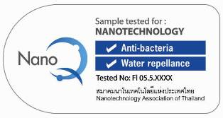

나노 안전성 정보
EHS란?
나노물질/기술 사용에 관한 환경, 안전, 보건 측면(Environmental, Health and Safety)
주요 국제기관 나노안전관리 동향
| 기관 | 기관명 | 주요동향 | |
|---|---|---|---|
| OECD | 경제협력개발기구 | ||
| ISO | 국제표준화기구 | 안전성평가 및 국제 표준화 작업을 추진 중에 있음 | |
| IEC | 국제전기기술위원회 | ||
| UN | SAICM | 화학물질관리 국제회의 | '06년부터 3년 주기 ICCM: 국가 이행현황 점검 및 평가 등의 기능 수행 나노기술 및 제조나노물질에 관한 정책 이슈 논의 |
'12년에 개최된 제3차 ICCM
나노기술 및 나노안전관리 관련 13개의 국제이행지표 마련
'20년까지 사전 예방 접근방식으로 과학적 기반 및 역량배양에 주력할 예정
주요 국제이행 지표
- 국제적으로 인정된 지침 및 표준개발
- 안전관리 법력 및 정책개발
- 이해관계자 간 유해성 및 위해성 정보제공 확대
- 인벤토리 구축
- 제품 라벨링
초기
- 물질특성, 독성평가 조사 및 연구 중심
전망
- 인체 및 생태계를 고려한 위해성 평가 및 관리 연구로 전화
- OECD, ISO 사업에 참여하여 국제적 시험지침 및 표준선정을 통한 나노제품 시장 진출 및 확대 예정
나노기술 및 나노안전관리 관련 13개의 국제이행지표 마련
'20년까지 사전 예방 접근방식으로 과학적 기반 및 역량배양에 주력할 예정
주요 국제이행 지표
- 국제적으로 인정된 지침 및 표준개발
- 안전관리 법력 및 정책개발
- 이해관계자 간 유해성 및 위해성 정보제공 확대
- 인벤토리 구축
- 제품 라벨링
초기
- 물질특성, 독성평가 조사 및 연구 중심
전망
- 인체 및 생태계를 고려한 위해성 평가 및 관리 연구로 전화
- OECD, ISO 사업에 참여하여 국제적 시험지침 및 표준선정을 통한 나노제품 시장 진출 및 확대 예정
국제기구: OECD
OECD
화학물질위원회
제조나노물질작업반
제조나노물질의 특성 및 잠재적 위해성
평가 및 관리 추진중
(13개 물질, 59개 항목 시험, '08년)
과학기술정책위원회
나노기술작업반
나노기술의 윤리, 법, 사회 영향(ELSI)
연구 진행중 ('07년)
- '09년 WPMN이 설립되어 국제협력으로 나노물질의 안전성 조사가 수행했으며, 아래와 같이 13개 물질을 대상으로 안전성 시험방법을 검토함.
- 현재 한국은 Silver의 주무국으로 연구를 지원 및 수행 완료했으며, 다음 단계의 사업 계획 중
| 주요 나노물질 | 주무국 | 부주무국 | 기여국 |
|---|---|---|---|
| Fullerense(C60) | 미국, 일본 | - | 덴마크, 중국 |
| SWCNTs | 캐나다, 프랑스, 독일, 유럽, 중국, BIAC | ||
| MWCNTs | 한국, BIAC | ||
| Sliver | 미국, 한국 | 호주, 캐나다, 독일, 북유럽 | 프랑스, 네덜란드, 유럽, 중국, BIAC |
| Iron | 중국 | BIAC | 캐나다, 미국, 북유럽 |
| Titanium dioxide | 프랑스, 독일 | 한국, 호주, 캐나다, 스페인, 미국, 유럽, BIAC | 덴마크, 일본, 영국, 중국 |
| Aluminum dioxide | - | 독일, 일본, 미국 | |
| Cerium dioxide | 미국, 영국/BIAC | 호주, 네덜란드, 스페인 | 덴마크, 독일, 일본, 스위스, 유럽 |
| Zinc oxide | 영국/BIAC | 호주, 미국, BIAC | 캐나다, 덴마크, 독일, 일본, 네덜란드, 스페인, 유럽 |
| Silicon dioxide | 프랑스, 유럽 | 한국, 벨기에, BIAC | 덴마크, 일본 |
| Dendrimers | - | 스페인, 미국 | 한국, 호주 |
| Nanoclays | BIAC | - | 덴마크, 미국, 유럽 |
| Gold | 남아프리카 | 미국 | 한국, 유럽 |
※ 주무국(지원사업 총괄 및 완료 책임), 부주무국(부분적 수행), 기여국(단순 자료 제공)
주요국 나노안전관리 동향
- OECD를 중심으로 하는 범정부 차원의 나노물질 안전관리를 위한 정보를 생산
- 미국, EU, 호주 등 선진국을 중심으로 실질적인 규제가 가능한 나노물질 규제 마련 단계
- 인식 수준
- 나노물질 안전관리에 관한 규제 마련이 필요하지만 강제성 지닌 법령 및 규정은 없는 실정
- 전망
- 후 수년 내에 선진국을 중심으로 규제 대상 나노물질의 확대 및 대상 물질의 연간 사용량 기준치 하향 조정하고, 나노물질과 나노소비재를 포함한 관리를 강화할 예정
| 국가 | 법령 및 지침 | 규제 대상 | 제도유형 | 규제내용 | |
|---|---|---|---|---|---|
| 등록/신고 | 표지 | ||||
| 미국 | 독성물질관리법(TSCA) | Si NPs Al NPs TiO₂NPs |
도입 또는 시행 중 | 규제대상 물질제조 시 제조 및 사용 90일 이전에 물질특성, 생산량, 용도, 배출 및 노출자료 등 제출 | |
| 살충살균살서제법(FIFRA) | Ag NPs | 도입 또는 시행 중 | 항균 기능을 지닌 Ag NPs 성분을 살균제로 분류 - 제품 성분 등 안전성 정보 제공 의무화 - 미이행 시 벌금 부과 |
||
| EU | 신화학물질관리제도(REACH) | NPs | 검토 또는 추진 중 | REACH 적용대상으로 안전성정보 제출 요청 | |
| 화장품지침 | NPs | 검토 또는 추진 중 | 물질정보, 유통량, 독성자료 등 제출 및 표시 의무화 | ||
| 살균제품법(BPR) | NPs | 검토 또는 추진 중 | 검토 또는 추진 중 | 등록·신고절차, 환경·건강 위해성자료 제출 및 표시 의무화 | |
| 뉴질랜드 | 화장품 기준 | NPs | 검토 또는 추진 중 | 화장품 표시 제도 시행 예정 | |
| 독일 | 제2차 나노기술이행계획 2015 | NPs | 검토 또는 추진 중 | 검토 또는 추진 중 | 제품에 위해성정보를 표시 의무화 |
| 호주 | 산업용화학물질평가법(ICA) | NPs | 도입 또는 시행 중 | 물리화학적 정보 제출 및 표시 의무화 | |
| 프랑스 | 그르넬법(Le Grenelle) | NPs | 도입 또는 시행 중 | 수입, 제조 및 판매 시 유통량 등 보고 의무화 | |
| 캐나다 | 환경보호법(CEPA) | MWCNT | 도입 또는 시행 중 | 나노제품 안전성 정보 제출 권고 | |
| 대만 | 나노제품 인증제도 | NPs | 도입 또는 시행 중 | 자발적 나노제품 인증표시제 운영 | |
나노물질의 안전관리를 위한 제도화 방안, 2011, 한국환경정책·평가연구원
나노물질 안전관리 중기계획 이행방안 마련 연구, 2012, 한국환경정책·평가연구원
미국
독성물질관리법(TSCA)
- 나노단위의 물질을 화학물질로 간주
- 나노물질의 제조와 인체 및 환경 유해·위해성으로부터 보호하기 위해 포괄적으로 규정
- 나노물질 및 나노제품의 수입/제조 중에 사용되는 탄소나노튜브에 대해 사전제조신고(PMN) 의무부여
- 나노물질이 기존화학물질과 화학구조나 조성이 같은 경우 동일한 물질로 취급
- 크기에 따라 그 특성이나 인체 유해성이 달라지는 나노물질의 특성을 고려하지 않음.
- 신규물질은 PMN 제출 및 기존물질의 다른 용도로의 사용은 SNUN 제출 의무화
- 연간 10톤 미만 생산 및 수입시 신고의무 제외대상이므로 나노물질의 경우 대부분 배제
- '13년 MWCNT, SWCNT, SiO₂, Al₂O₃ 예외조항 성격으로 관리
- SWCNT: 제조 90일전 자료를 제출, 허가 후 제조 및 판매
- MWCNT: 90일 흡입독성자료를 제출, 독성에 관한 안전관리 의무 추가
미국 연방 살충살서제법(FIFRA)
- 나노제품에 의한 부작용(유해성)을 규명하고자 신규물질에 대한 규제 실시 선언
- 은나노 물질: 소비재로 가장 널리 사용되는 물질로서 대상물질의 관리가 시급하다고 판단
- 살충제로 분류하고 은나노물질이 포함된 제품에 대해서는 등록절차를 취하도록 규정
미국 연방 식품의약품 및 화장품법(FFDCA)
- 화장품 성분내 나노물질에 관한 활성정보 검토
- 나노물질을 함유하되 안전성평가가 실시되지 않았거나 평가가 불가능한 제품에 대해서는 시장판매 불허 방침
나노기술과 제품의 지속가능한 평가를 위한 지침(EPA)
- 나노기술 제품 또는 나노물질 수명주리를 통해 잠재적인 환경적, 경제적, 사회적 영향의 평가도구 제공
- 이해관계자 모두가 적용하여 사용 가능
- 나노기술 및 제품에 있어 위험성을 최소화
- 근거없는 위험성 주장을 사전에 차단
- 대중의 인신 개선과 비용 절감
나노 안전성 확보를 통한 산업화 촉진 전략 추진 중
- 국가나노기술 환경, 보건, 안전 전략(NNI EHS, '10.12) 중 'NanoEHS 연구의 인포메틱스와 모델링'을 주요 연구과제로 설정
- 최근 '나노안전성 정보학'의 중요성이 국내외적으로 강조되고 있음.
- '핵심 나노안전성 연구분야'에 추가
- 나노물질 사전 신고제도 및 산업계 지침(안) 발표('11.6, FDA)
미국 NNI에서 제시한 6대 핵심 나노안정성 연구분야
-
나노물질
측정기반
-
인체 노출
평가
-
인체건강
-
환경
-
위해성 평가 및
관리방법
-
나노안전성 연구의
정보화 및 모델링
* National Nanotechnology Initiative(국가나노기술전략)
기타
일본
- 경제산업성(METI)을 중심으로 나노산업에 관한 정보 수집
- 민·관·학·연 연계 실용적 전주기 나노물질 안전관리법 개발 촉진 - 환경성(MOE)을 중심으로 나노유해성 정보 수집
- '나노입자 분석법 연구개발을 통한 제조나노물질 위험평가(NEDO)' 활동
캐나다
- 화학물질관리법(CEPA)에 나노물질 안전성 정보제출을 의무화
- '10년 MWCNT에 대해 중요 신규활동의 적용 고시 - 미국 TSCA의 SNUR 적용과 유사한 방향으로 진행
프랑스
- 그르넬(Grenelle)법에 따라 나노물질 규제
-연간 100g이상 제조/수입되는 물질에 대해 나노물질 신고대상 포함 - 프랑스 생태부: 나노제품의 강제적 신고 프로그램 시행 예정
- 제2그르넬법을 통해 제품 중 나노물질에 대한 제도 구축
호주
- 미국 TSCA와 카운터파트인 NUCNAS를 운영
- 나노물질 안전관리 규제화 입안 시도 - '11년부터 산업용 나노물질을 새롭게 지정 및 관리시행(신고 및 평가제)
- 상업적 목적의 년간 100kg 사용 초과에 대해 등록대상으로 지정
태국
- 국가나노기술센터(NANOTEC) 운영
나노물질과 관련한 규제와 정책(안)을 마련 - NanoQ 표시제를 도입
- 나노물질 특성, 형태, 크기가 명확히 정의된 제품에 관하여 제품의 명시

▲ 태국내 나노제품에 대한 NanoQ 라벨 (Nanosafety in Thailand)
나노물질의 안전관리를 위한 제도화 방안, 2011, 한국환경정책·평가연구원
나노물질 안전관리 중기계획 이행방안 마련 연구, 2012, 환경부
나노물질 안전성 중장기(5개년) 추진계획 수립연구, 2008, 환경부